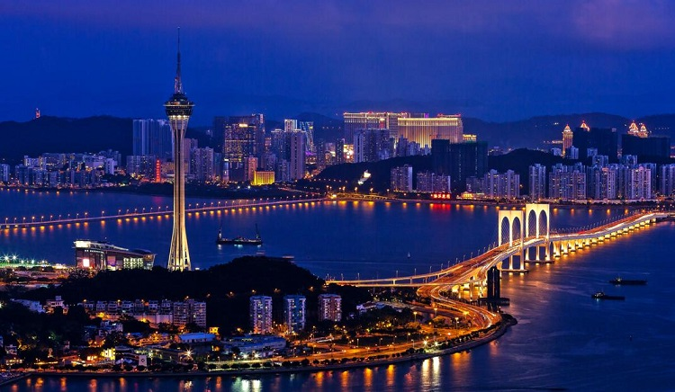

介绍
#地理位置与历史概况#
澳门（葡语Macau、英语Macao），全称为中华人民共和国澳门特别行政区。北邻广东省珠海市，西与珠海市的湾仔和横琴对望，东与香港隔海相望，相距60公里，南临中国南海。

图：澳门夜景
澳门市区不大，依靠公交车即可方便地在城区游览。市区内随处可见的教堂和欧式建筑充满异域风情，步行游览也非常合适。除了观光，澳门的娱乐业非常发达，同时也是购物的好地方。这里不容错过的还有美食，当地的土生葡菜值得尝试，还有诱人的葡式蛋挞。
1999年12月20日中国政府恢复对澳门行使主权。经过100多年欧洲文明的洗礼，东西方文化的融合共存使澳门成为一个风貌独特的城市，留下了大量的历史文化遗迹。澳门历史城区于2005年7月15日正式成为联合国世界文化遗产。
#宗教#
由于澳门独特的地理位置和历史背景，所以澳门文化是有深厚传统内涵的中华文化和以葡萄牙文化为持质的西方文化共存的并行文化，是一种以中华文化为主、兼容葡萄牙文化的具有多元化色彩的共融文化。
妈祖文化在澳门得到广泛传播，澳门仅供奉天后的庙宇就有10多间，作为民间信仰的妈祖信仰融入佛教、道教，成为多元信仰。
澳门曾经是宗教文化中心，既有儒、释、道等古老的中国宗教，也有后传入的天主教、基督教、伊斯兰教等宗教，宗教文化的多元化在澳门也得到了充分表现，天主教、基督教、佛教、道教、妈祖在这里都有保留。如大三巴牌坊融合了东西方建筑的精华，是东西方宗教互相包容的杰作。
由于澳门是华洋共处和实行信仰自由的地区，其内居民的宗教亦呈多元化。由于多数居民为华人，信仰以儒、释、道及民间神祇为主。澳门华人的文化深受中华民族传统文化和儒家的道德思想所影响。每逢孔圣诞，澳门孔教会会带领社会各界华人和学校举行纪念与祭典仪式。
至于佛教，位于望厦村的普济禅院便是澳门早期兴建的寺庙建筑之一。而道教所供奉的神祇，如：谭公、洪圣爷、文昌帝君、关帝、北帝、城隍等崇拜都见于澳门。而观音和妈祖崇拜在澳门特别流行，其建筑有明朝成化年间由闽商人兴建的妈祖阁庙。
基督宗教方面，天主教澳门教区成立于1576年1月23日，首任主教为贾耐劳（仁慈堂创办人）。首位华人主教为林家骏主教。由于回归前大量土生葡人离开澳门，信徒以华人为主。
基督新教也是以澳门为踏足中国的第一站，英国伦敦传道会的传教士马礼逊于1807年来到澳门，展开了基督新教在中国的宣教历史。
澳门有两间最古老的华人新教教会，分别是中华基督教会志道堂和澳门浸信会（又称白马巷浸信会），约有一百年的历史。圣公会维多利亚教区成立于1849年，管辖范围包括澳门，现该教区已成为香港圣公会澳门传道地区。
除主流信仰外，澳门亦存在不同种类的宗教。例如伊斯兰教可能在明代以前由波斯商人传入澳门，其社团组织为澳门伊斯兰会。巴哈伊教在宣教运动中也选中澳门为传教地区之一，在1935年由来自美国加利福尼亚州的巴哈伊教徒法兰西斯·希拉太太（Mrs.FlancesHeller）传入，现其社团组织为澳门巴哈伊总灵体会。
另外，新兴宗教的国际基士拿知觉协会、日本的神慈秀明会、澳门创价学会等都有在澳门活动，只是规模较主流宗教相对小。
#最佳出游时间#
9月至次年2月，是到澳门旅游的最佳时间，这时气候温和，湿度低，体感舒适，且正临圣诞节春节打折季，各大商场打折优惠活动较多。

图：澳门夏季
澳门的博彩文化
澳门的博彩业在其经济中产生举足轻重的影响。澳门向有赌城、赌埠之称，与摩纳哥蒙特卡洛、美国拉斯维加斯、美国大西洋城合称为“世界四大赌城”。
澳门的赌场从来不关门，如果停业，必须得到政府部门的审批才可以。进入赌场需要安检，相机等不允许带入场，未成年人禁止入内。筹码兑换只能用港币，筹码最小有几十元，最大有200万港币！人民币和澳门币等货币均可在赌场货币兑换处兑换成港币，只是汇率可能没有那么划算。
特别注意，澳门赌场的年龄门槛是21岁，部分赌场的接驳巴士会拒载未满21岁的游客；进入赌场也要随身带好通行证等证件，忘记带证件可能会被拒绝入内。
#老虎机#
老虎机是赌场最简单的游戏之一，不需要懂什么规则，因为上面有老虎图案的筹码而得名。老虎机有三个玻璃框，里面有不同的图案，投币之后拉下拉杆，就会开始转，如果出现特定的图形（比如三个相同）就会吐钱出来，出现相同图型越多奖金则越高。
图：澳门老虎机
#轮盘大赢家#
轮盘（Roulette）是一种赌场常见的博彩游戏。Roulette一词在法语的意思解作小圆轮。澳门赌场轮盘有0-36一共37个数字，转盘停下后指针所指的号码即为中奖数字，赔率为1：35.放筹码时也可以放到2个或3个数字的交界处，这样无论是那个号码中奖，玩家都能赢但赔率将为1：17，相应的，如果放到4个数字的交界处，赔率为1：8。
图：澳门轮盘赌
#押大小#
押大押小游戏的规则是如果三个骰子的点数加到一起小于等于10，就算小；如果点数大于等于11，就算大。每次可以把一定金额的筹码放到赌桌上写着大和小的圆圈里，如果押对了，押了一个筹码，就可以拿回两个筹码；如果押错了，押的筹码就归赌场了。
游戏还有一条额外的规则，叫“大小通吃”，当三个骰子的点数是一样的时候（比如三个1，三个2……三个6），叫围骰。这个时候不管玩家押大押小，都算玩家输，赌场赢。按照概率计算，这六种围骰的情况，每一种的概率是1/6*1/6*1/6=1/216，加到一起是（1/216）*6=1/36，这样做的话赌场的胜率就从50%上升到了51.39%，玩家的胜率也就从50%下降到了48.61%。
图：澳门押大小
除了可以押大小以外，玩家还可以“押围”，也就是说可以把砝码放在代表三个1的格子里（上图中左下角的格子里），如果最后骰子真的是三个1，押了1000元，最后可以净赚15万！用赌场专业术语，押大小的赔率是1：1，押围骰的赔率是1：150。
可以看到，赌桌上还写了一些4到17的数字，表示还可以押具体一个数字，比如押三个骰子数字加到一起的和是11。
温馨提示：偶尔玩玩，不要迷恋这个东东，你的赢钱机率比轮盘、百家乐、21点都低，但是它由于规则简单，适合初入赌场的游客放松心情玩玩。
#百家乐#
龙虎斗里的龙和虎双方在百家乐里相当于庄家和闲家，发牌员会派出“庄家”和“闲家”各两张牌，总数得 9 点或最接近 9 点的一家胜出。参赌者可以押庄家赢、闲家赢、和局。
玩百家乐一定要用《微笑心法》，见庄跟庄，见闲跟闲，见跳跟跳，切勿胡乱打。要耐住性子，从容寻找“正在赢钱的那一桌”，然后果断下注，不要心急，以平注为主，适当微调。
图：澳门百家乐
PS：在电影《赌神》中，周润发扮演的赌神能够提前预测背面朝上的牌的数字是多少，微笑着说“三千万美元，我跟”。不过，这样的情景在现实世界中是永远不会发生的。
无论是什么赌博游戏，每一个赌局的结果都是不确定的，没有人可以预知。数学知识只是可以证明一些赌博游戏不具有技巧，至多可以帮助玩家在成千上万次的重复游戏中稍微提高赢的次数，降低输的次数。
#决胜21点#
扑克牌类的游戏中还有一个名为 21 点的，在赌场里玩 21 点的玩家大多西装革履，出手的筹码金额也动辄上千上万。
图：澳门21点
21点的规则是这样的：站在圆弧桌子后面的荷官会一轮一轮向各位玩家手里发牌，每个人需要计算手里的几张牌点数加到一起是多少（J，Q，K 的点数是 10 分；A 有两种算法，1 或者 11，如果 A 算为 11 时总和大于 21，则 A 算为 1），如果点数超过了 21 就算爆牌，谁先爆牌谁就输了。
荷官会作为庄家参与到游戏中，其他玩家的点数与庄家的点数比大小，大于庄家就可以赢，小于庄家就会输。在得到两张牌之后，玩家有权决定是否继续要牌。玩家的目标就是让自己手里的牌的点数和尽量接近 21 点，但是又不超过 21 点。
21 点还有很多附加规则，比如一开始的两张牌正好是一张 A 和一张 10 点的牌（加起来刚好 21），这就称为 Blackjack；如果别人也达到了 21 点，Blackjack 还可以更胜一筹。如果前两张牌点数相同，玩家还可以把牌分开，相当于一个玩家在充当两个玩家的角色，这种玩法就叫做“分牌”。
时差
澳门的时间比格林威治标准时间早八小时。 澳门与北京时间一样。
公众假期及节庆
澳门的节日与内陆地区相似，具体节日如下：
| 节日 | 日期 |
| 元旦 | 1月1日-1月2日 |
| 春节 | 1月27日-2月1日 |
| 清明节 | 4月4日 |
| 耶稣受难日 | 4月14日 |
| 复活节 | 4月15日-4月17日 |
| 劳动节 | 5月1日 |
| 佛诞 | 5月3日 |
| 端午节 | 5月30日 |
| 国庆节 | 10月1日-10月3日 |
| 中秋节 | 10月5日 |
| 重阳节 | 10月28日-10月30日 |
| 追思节 | 11月2日 |
| 圣母无原罪瞻礼 | 12月8日 |
| 澳门特区成立纪念日 | 12月20日 |
| 冬至 | 12月22日 |
| 圣诞节 | 12月24日-12月26日 |
澳门2017年公众假期共有20天，大致分为元旦、春节、耶稣受难日、复活节、清明节、劳动节、佛诞节、端午节、中秋节、国庆节、重阳节、追思节、圣母无原罪瞻礼、澳门特别行政区成立纪念日、冬至及圣诞节。
#佛诞节#
佛诞是北传佛教纪念和庆祝佛教创始人佛祖释迦牟尼佛诞生的日子。佛诞节又称佛诞日、浴佛节、灌佛会、龙华会、华严会等。自古以来，在当天佛教庙宇都举行一连串盛大的浴佛仪式、庆祝活动，祈求佛祖福泽社会，消弭灾难，以及礼请法师开坛说法，说教论道。佛教徒都会在这一天回顾和学习佛祖慈悲的教导。
图：佛诞节
#圣诞节#
由于澳门独特的历史原因，中西合璧的澳门每到圣诞，节日氛围都非常浓厚。不论你走到哪里，漂亮的圣诞橱窗，偌大的圣诞树，漂亮的灯饰。在圣诞节期间会举办许多好玩的活动，如澳门威尼斯人带来的3D灯光表演、澳门光影节、圣诞市集、圣诞乐唱游等。
圣诞节期间也往往是购物打折比较集中的时候，在这个时候来到澳门体验一下节日气氛，并一起“扫货”，也是不错的选择。
图：圣诞节
#复活节#
复活节是一个西方的重要节日，在每年春分月圆之后第一个星期日。基督徒认为，复活节象征着重生与希望，为纪念耶稣基督于公元30到33年之间被钉死在十字架之后第三天复活的日子。
虽然复活节是一个西方的节日，但是由于澳门独特的历史原因，复活节在澳门也算是一个盛大的节日了。在澳门，复活节有时会有巡游的活动。
图：澳门复活节巡游活动
#圣母无染原罪节#
每年12月8日是 圣母无染原罪节（又名圣母无染原罪瞻礼、圣母无原罪始胎节、圣母无原罪日），是天主教节庆之一，乃庆祝圣母玛利亚获得无原罪的恩赐的一个瞻礼。 在智利，阿根廷、奥地利、哥斯大黎加、西班牙、意大利、爱尔兰、马尔他和澳门等地都将此节日立为假期。
图：圣母无染原罪节
#追思节#
澳门11月2日是「追思节」天主教会和圣公会的炼灵月的第二天，俗称「天主教的清明节」，是用作纪念亲人、炼灵等的瞻礼日。圣味基坟场会在当天举行追思弥撒。